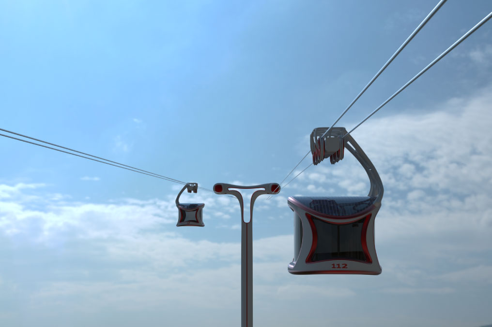

El proyecto resuelve la necesidad de movilizar personas en lugares de alta densidad poblacional a los que no llega el metro. Funcionando como un apoyo al sistema de buses del Transantiago en las primeras etapas, así se podrá conectar de una mejor manera con los habitantes, reduciendo la alta dependencia en la movilización de los autos. Esto se logrará con un sistema anexo de paneles solares, a los que se les sumará un sistema de reincorporación de energía que recuperará energía cuando el teleférico va frenando en bajada y ocupándola cuando va subiendo, disminuyendo significativamente el consumo energético.

Materialidad
En cuanto a la materialidad, el principal elemento de su estructura será la fibra de carbono, este se ocupará tanto en la cabina, como en su unión superior puesto que es más liviana y resistente, lo que producirá que sea más eficiente energéticamente, ayudando a su autonomía y rigidez.
El techo está hecho a partir de paneles solares moldeables a su estructura y, además, cuenta con termopaneles laminados. Esto permite que tenga una resistencia mayor y también que se conserve mejor la temperatura por dentro.
La unión entre la cabina y las ruedas se produce con un armazón inspirado en el diseño generativo que está fabricado con fibra de carbono, las ruedas están fabricadas con una aleación de manganeso que las vuelve resistente al desgaste.